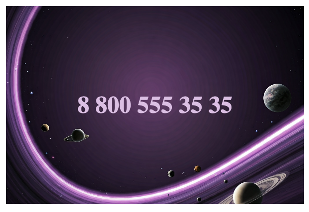

Создайте визитную карточку с фоновым изображением и номером телефона в центре.

background-image.html
Добавьте код для структуры карточки:
- Контейнер, для которого будем задавать фоновую картинку
- Параграф с номером телефона "8 800 555 35 35"
background-image.css
Оформите карточку по следующим правилам:
-
Карточка должна быть шириной
300pxи высотой200px -
Шрифт: цвета
#e1bee6, жирного начертания, размером24px -
Фоновое изображение (лежит в папке
images) центрировано и занимает весь блок